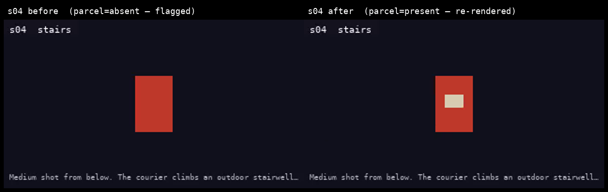

The film checks itself, and re-renders only what broke
A generated film loses continuity between shots. The courier's jacket is red in shot two and blue in shot three, and nothing in the pipeline notices. This is an agent that reads the finished cut back, judges which shots broke, repairs those, re-renders only them and checks its own work. It runs the same four steps every pass: perceive, judge, act, verify.
The cut it read
What it found
| verdict | shot | attribute | reading |
|---|---|---|---|
| found | s03 | jacket | red → blue |
| found | s04 | parcel | present → absent |
2 breaks planted, 2 found. 15 of 15 cells read as declared. The checker never sees the answer key: it is handed the questions and the words it may answer with, and the grading runs afterwards, against the written report.
Work through a run yourself
Pick a film, then a shot. You get the stills the checker sampled, the questions it was handed, what it answered about each still, and what the scorer made of the answers. Arrow keys move between shots.
There is more than one film here, and that is deliberate: a checker only ever run against one cut is indistinguishable from a checker with that cut's answer written into it. Also on the picker:
- The Lighthouse Keeper — 2 breaks planted, 2 found
Nothing above is decided in the browser. Every value on it is lifted out of the
same two files cinema score reads, so this shows the run rather than a second
opinion about it.
Before, and after

A break names what the shot should have been as well as what it is, so the repair is read off the finding rather than guessed. The repair is a layer over the spec, never an edit to it. A tool that can edit its own answer key can report any accuracy it likes.
What produced these numbers
| reader | pixels |
| run at | 2026-08-13T23:27:37+00:00 |
| frames per shot | 2 |
| cost of the check | $0.0000 |
the offline pixel stand-in. It reads the placeholder renderer's own boxes. It proves the pipeline and it is not the detection.
Detection is Gemini on Vertex AI and it has not run yet, because the credential and the budget behind it are open work. So the score above measures the pipeline and says nothing about detection quality on a real frame. Reading a whole 40-second film with Gemini 2.5 Pro is priced at about $0.04, against $16.00 to render it at full quality, which is the argument: checking is close to free next to generating.
Running it
python3 -m cinema build: render what changed, join it into out/cut.mp4python3 -m cinema check: read the cut back, report the breakspython3 -m cinema score: grade that report against the key it never sawpython3 -m cinema fix: repair, re-render only what moved, check again, plate it
The source is at https://github.com/jtmuller5/continuity-checker, MIT licensed. It runs with no credential.